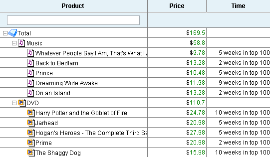
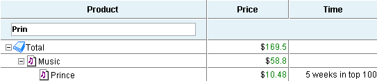
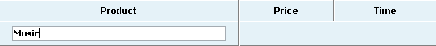
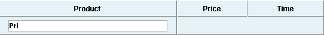
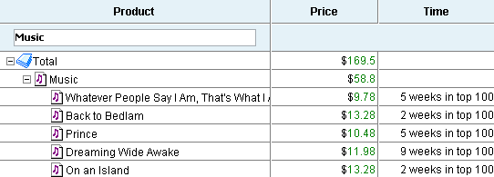
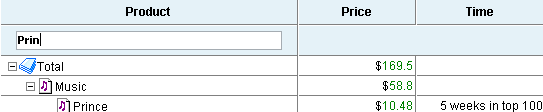
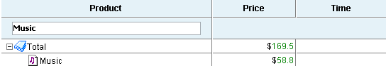
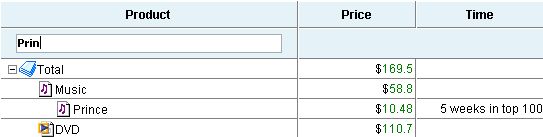
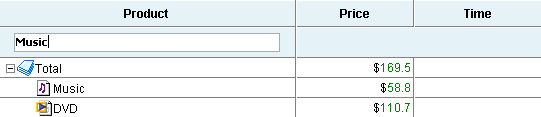

Filtering in TreeGrid
While filtering in the plain grid is pretty obvious and has not space for variations, filtering in TreeGrid can be applied in many different ways.
Filtering by Level
By default filtering in the TreeGrid affects only the last level of hierarchy (leaf items). This mode can be enabled like this:
treegrid.setFilrationLevel(-1);
For example:

The dataset presented on the picture above will be filtered like this:

The branches in which the item is not find will be full hidden

Values that are not on the last level were ignored.
Level of filtration ca be changed again in the following way:
treegrid.setFiltrationLevel(1); // upmost level has index 0
After this command, filtering uses data from different levels of hierarchy and filtering will show the following results:


In the second case, the user can see the items that are below the found one.
It is possible to force the TreeGrid to filter data on all levels of hierarchy at the same time in the following way:
treegrid.setFiltrationLevel(-2);


In such mode, filtering shows only items that match filtering criteria, lower level items are not shown.
"Top Level Show" Mode
This mode can be enabled like this:
treegrid.enableFiltrationMode(-1,true);
In such mode, the upper level items without child items matching filtering criteria are still shown, items from filtration level and below - are hidden.


In the second picture, both Music and DVD did not match filtering criteria because filtering run only against last level items, but they are still shown.